Can the core actually be seen?
The webcam at Lopstick was plate-solved from its own stars: bearing 178.5°, 94° wide, pitched 3° below level. Every target of this trip falls inside that frame — the Milky Way core, Rho Ophiuchi, M8 and M20 — at the same low southern altitudes you will be shooting them at, from 16.6 km away.
So this is not a cloud proxy. A star either shows through or it does not. It also covers the case the satellite handles worst: infrared struggles with low cloud whose tops sit near ground temperature, and low cloud is exactly what blocks a target at 16°.
Flux 20,868 · brightest source 17× the noise · core at 15.6° altitude
One bar per capture, height is light collected in the core region. Click a bar to jump to that frame.
Why flux and not just a count
A star count depends on where the detection threshold lands, and the stack noise moves between captures. Two grabs two minutes apart gave 15 sources and then 5 — not because the sky changed, but because σ went from 0.78 to 0.88 and the 6σ cut moved with it. Flux is the total light collected and does not care where a threshold sits, so it is the number to compare across captures and across nights.
● core region ● Rho Ophiuchi ● teapot ● detected source
How well is the camera pointed?
The star counts depend on a plate solve — bearing 178.5°, 94° wide, pitched 3° below level — and every number here rests on it, so it is worth showing rather than asserting. Measured against catalogue positions across every capture:
| star | mag | alt | matches | mean error | range |
|---|---|---|---|---|---|
| Dschubba | +2.29 | 16° | 2 | 10 px | 3–18 |
| Alnasl | +2.98 | 14° | 1 | 10 px | 10–10 |
| Sigma Sco | +2.88 | 15° | 3 | 12 px | 3–24 |
| Antares | +1.06 | 12° | 1 | 21 px | 21–21 |
| Mu Sco | +3.00 | 4° | 1 | 24 px | 24–24 |
| Sabik | +2.43 | 27° | 2 | 29 px | 27–30 |
| Kaus Bor | +2.81 | 19° | 1 | 47 px | 47–47 |
| Nunki | +2.05 | 19° | 1 | 49 px | 49–49 |
| Theta Oph | +3.27 | 19° | 3 | 49 px | 33–76 |
| Lesath | +2.69 | 7° | 1 | 56 px | 56–56 |
| Eta Sgr | +3.11 | 8° | 4 | 70 px | 60–79 |
Confident matches — stars brighter than magnitude 2.95, where the pairing is unambiguous — sit at 26 px mean error, about 1.7° at this plate scale. Fainter stars show larger residuals, but those are almost certainly mispairings rather than a bad solve: at an 80 px search radius a faint catalogue star will find something. Error does not grow toward the frame edge (correlation −0.71), so this is not lens distortion.
A 26 px pointing error is about a fifth of the 220 px aperture radius. Flux is unaffected; naming an individual star is not, which is why the headline number is flux and the star count is shown as supporting detail.
The frames
Each is a median stack of the 30 least-compressed frames from a 30-second grab at 1080p, stretched so faint stars are visible, masked to sky only. Newest first.
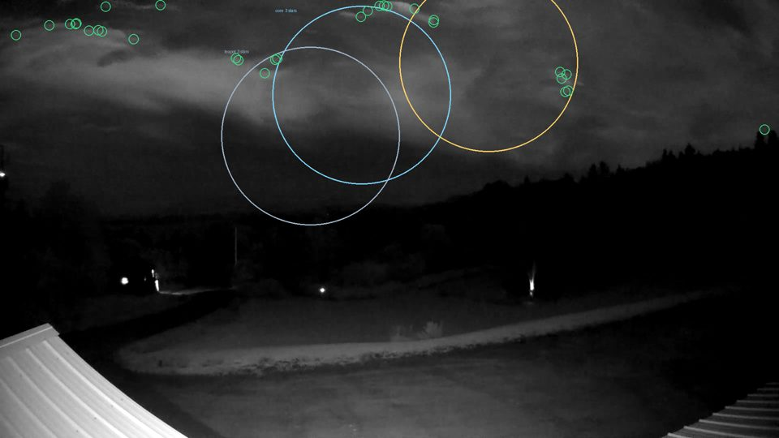
core 3 stars · flux 20,868 · peak 17× · alt 15.6°
rho 9 stars · flux 19,000 · peak 13×
teapot 3 stars · flux 20,882
30 of 60 frames stacked · noise σ 1.81 · 40 sources in sky
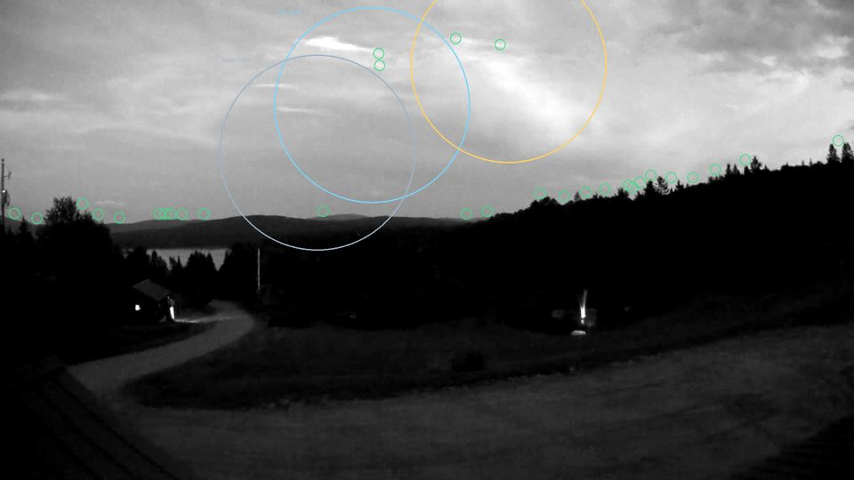
core 5 stars · flux 70,396 · peak 17× · alt 15.2°
rho 2 stars · flux 20,227 · peak 10×
teapot 1 stars · flux 46,508
30 of 60 frames stacked · noise σ 1.88 · 40 sources in sky
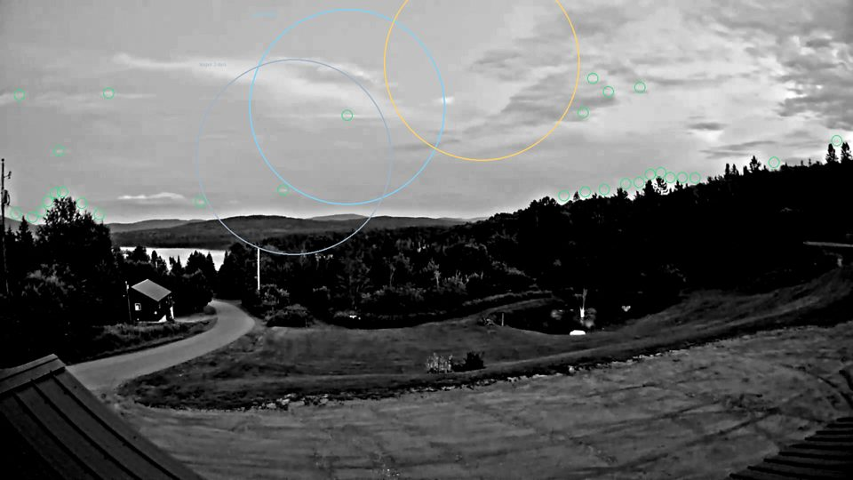
core 2 stars · flux 36,768 · peak 18× · alt 14.6°
rho 2 stars · flux 31,024 · peak 12×
teapot 3 stars · flux 43,308
30 of 60 frames stacked · noise σ 1.08 · 40 sources in sky
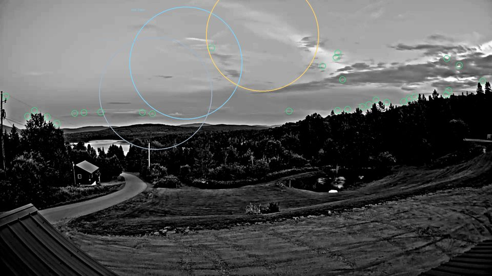
core 2 stars · flux 49,604 · peak 29× · alt 13.9°
rho 2 stars · flux 56,336 · peak 24×
teapot 3 stars · flux 59,872
30 of 60 frames stacked · noise σ 1.02 · 40 sources in sky
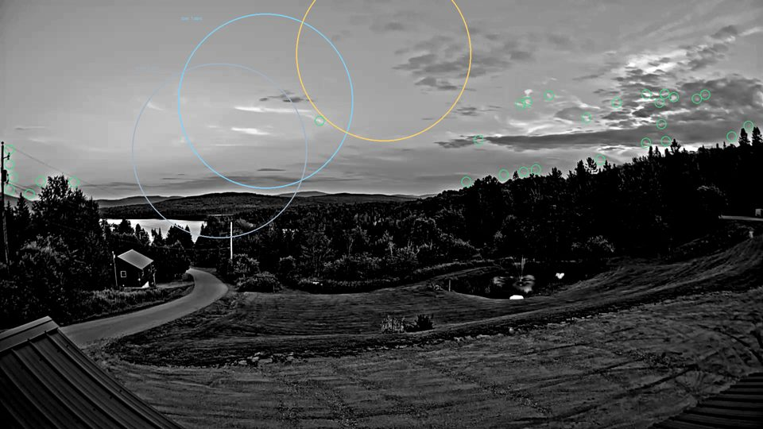
core 1 stars · flux 93,613 · peak 31× · alt 13.1°
rho 0 stars · flux 57,838 · peak 25×
teapot 0 stars · flux 102,520
30 of 60 frames stacked · noise σ 1.2 · 40 sources in sky
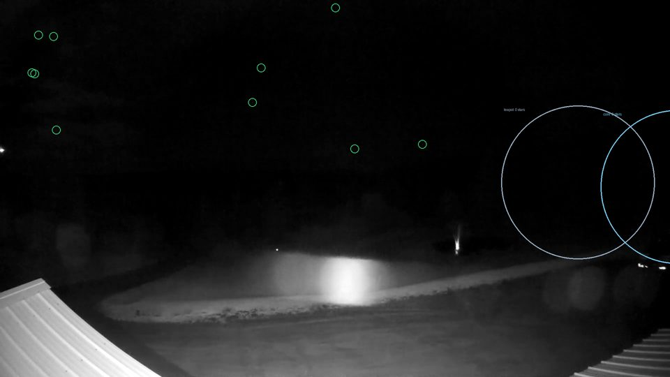
core 0 stars · flux 25 · peak 4× · alt 0.4°
rho 0 stars · flux 0 · peak 0×
teapot 0 stars · flux 151
30 of 60 frames stacked · noise σ 0.94 · 10 sources in sky
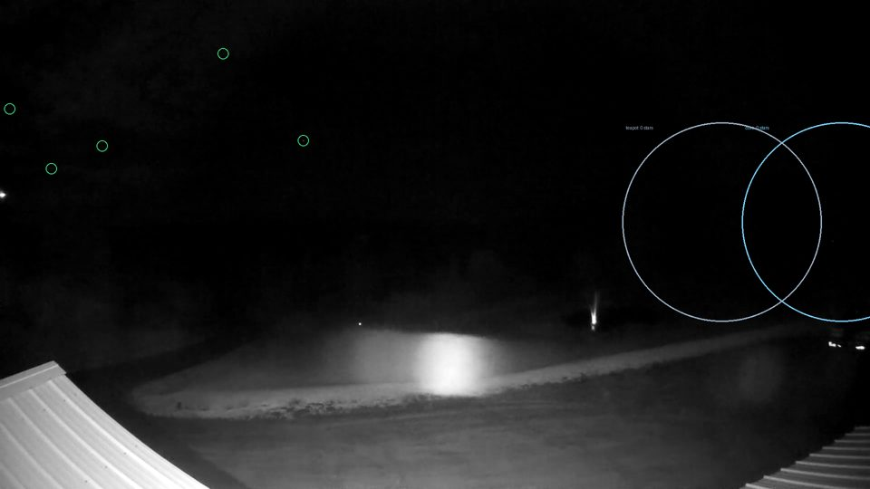
core 0 stars · flux 62 · peak 4× · alt 2.3°
rho 0 stars · flux 0 · peak 0×
teapot 0 stars · flux 397
30 of 60 frames stacked · noise σ 0.96 · 5 sources in sky
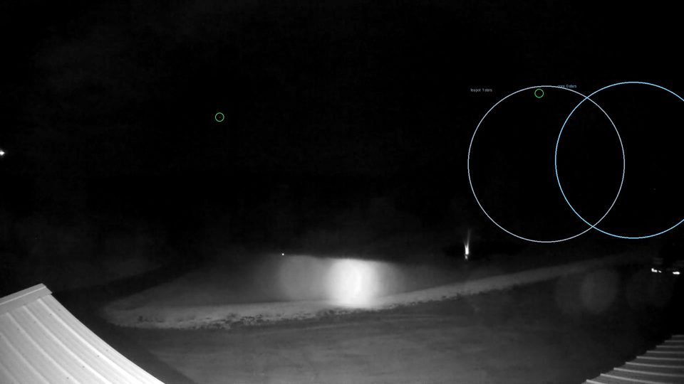
core 0 stars · flux 266 · peak 5× · alt 4.0°
rho 0 stars · flux 0 · peak 0×
teapot 1 stars · flux 432
30 of 60 frames stacked · noise σ 0.98 · 2 sources in sky
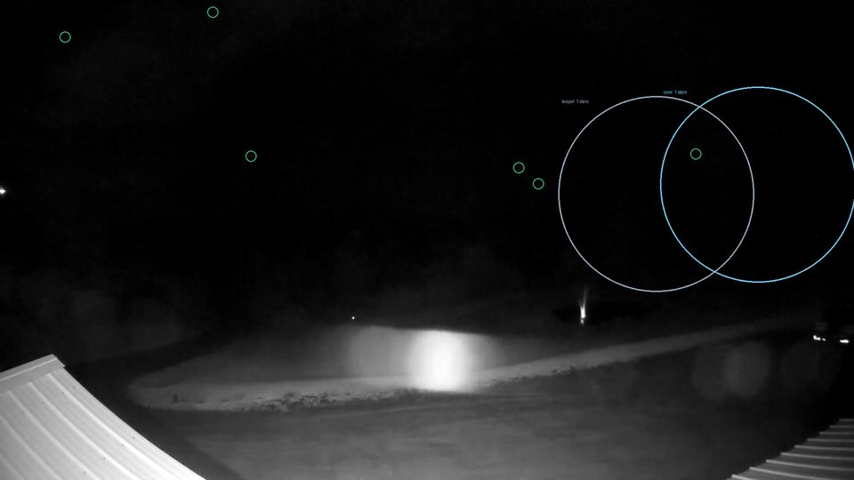
core 1 stars · flux 612 · peak 19× · alt 5.7°
rho 0 stars · flux 0 · peak 0×
teapot 1 stars · flux 875
30 of 60 frames stacked · noise σ 0.9 · 6 sources in sky
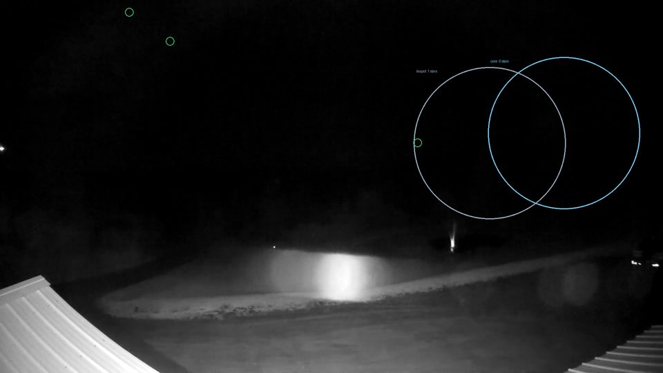
core 0 stars · flux 499 · peak 5× · alt 7.3°
rho 0 stars · flux 0 · peak 0×
teapot 1 stars · flux 1,100
30 of 60 frames stacked · noise σ 0.85 · 3 sources in sky
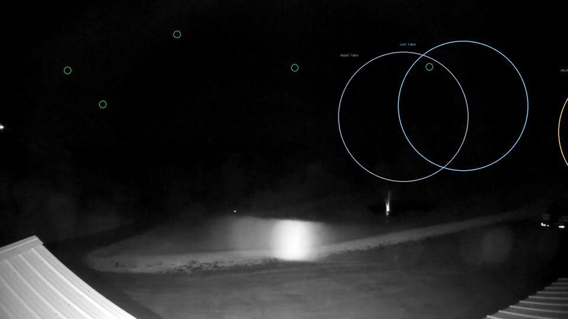
core 1 stars · flux 835 · peak 8× · alt 8.7°
rho 0 stars · flux 0 · peak 0×
teapot 1 stars · flux 1,161
30 of 60 frames stacked · noise σ 0.86 · 5 sources in sky
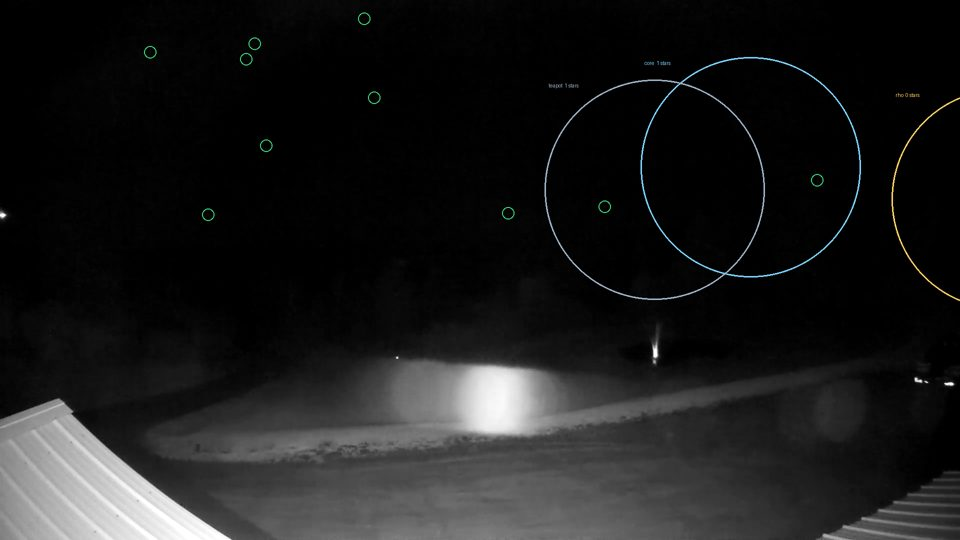
core 1 stars · flux 380 · peak 6× · alt 10.1°
rho 0 stars · flux 0 · peak 2×
teapot 1 stars · flux 835
30 of 60 frames stacked · noise σ 0.87 · 10 sources in sky
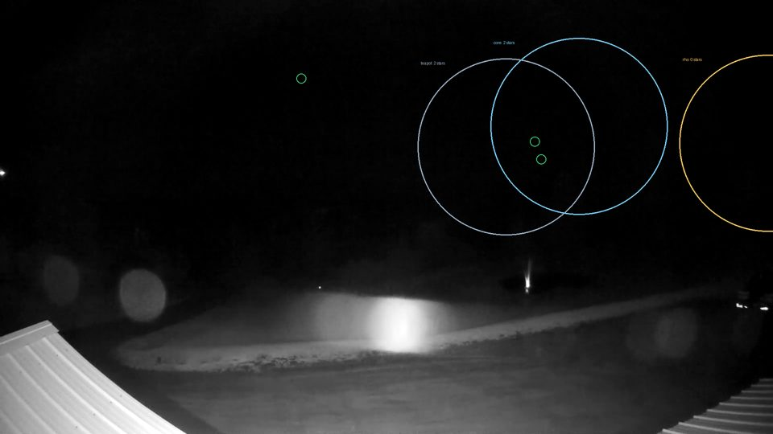
core 2 stars · flux 1,247 · peak 9× · alt 11.3°
rho 0 stars · flux 83 · peak 4×
teapot 2 stars · flux 1,183
30 of 60 frames stacked · noise σ 0.86 · 3 sources in sky
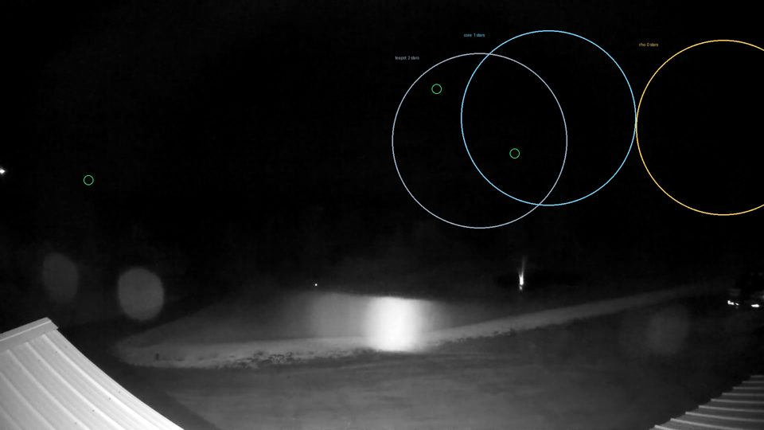
core 1 stars · flux 1,708 · peak 9× · alt 12.4°
rho 0 stars · flux 162 · peak 4×
teapot 2 stars · flux 1,308
30 of 60 frames stacked · noise σ 0.9 · 3 sources in sky
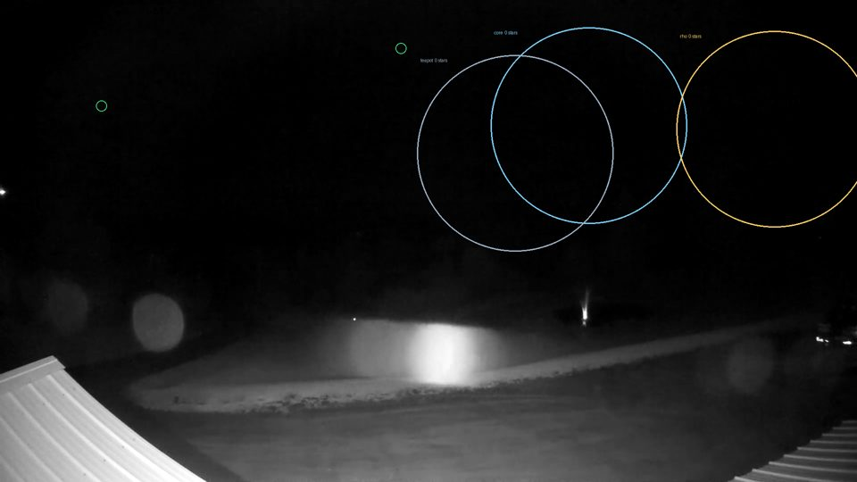
core 0 stars · flux 1,082 · peak 4× · alt 13.3°
rho 0 stars · flux 430 · peak 5×
teapot 0 stars · flux 1,032
30 of 60 frames stacked · noise σ 0.92 · 2 sources in sky
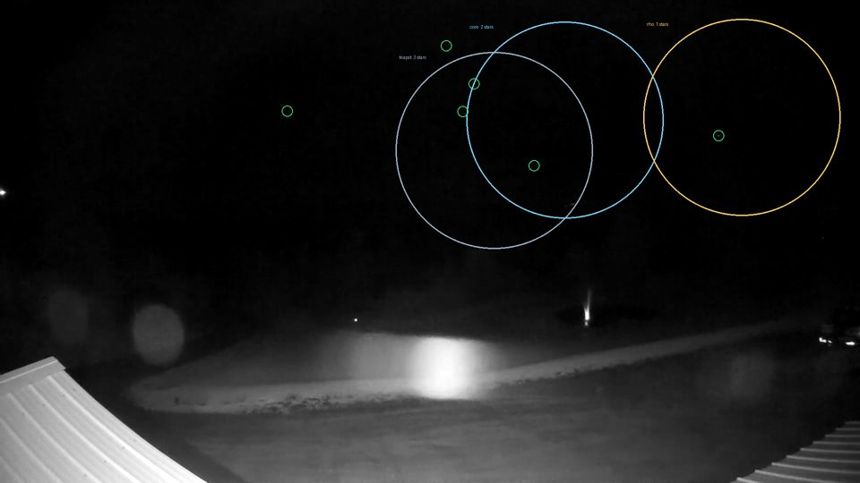
core 2 stars · flux 1,734 · peak 18× · alt 14.1°
rho 1 stars · flux 3,364 · peak 114×
teapot 3 stars · flux 1,250
30 of 60 frames stacked · noise σ 0.92 · 6 sources in sky
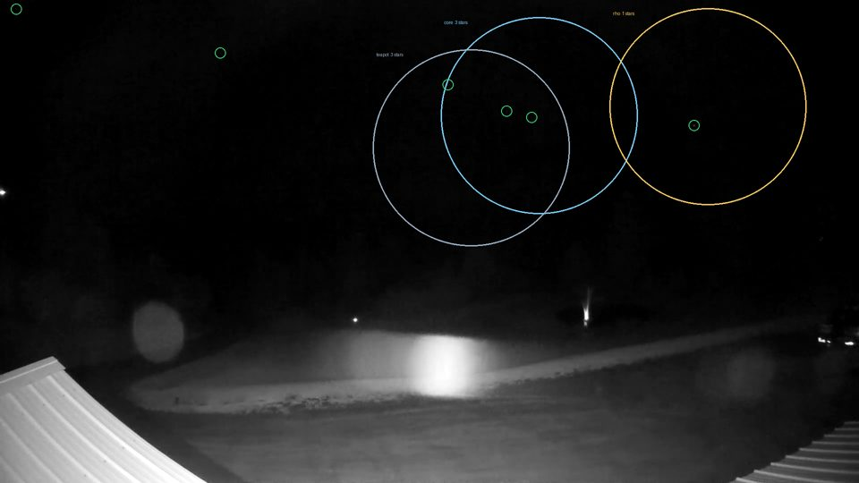
core 3 stars · flux 1,668 · peak 26× · alt 14.8°
rho 1 stars · flux 2,280 · peak 104×
teapot 3 stars · flux 1,380
30 of 60 frames stacked · noise σ 0.88 · 6 sources in sky
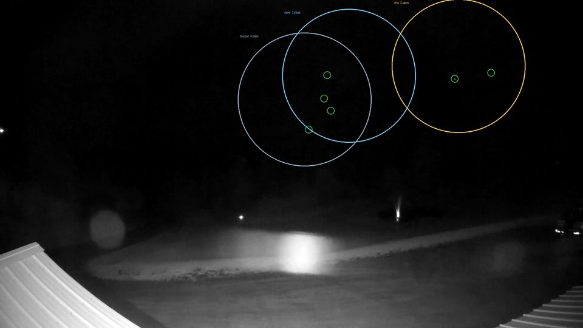
core 3 stars · flux 1,774 · peak 32× · alt 15.3°
rho 2 stars · flux 3,648 · peak 169×
teapot 4 stars · flux 1,680
30 of 60 frames stacked · noise σ 0.86 · 6 sources in sky
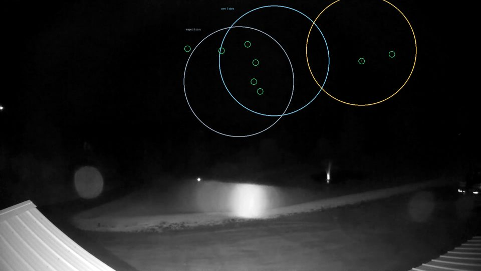
core 5 stars · flux 1,785 · peak 37× · alt 15.6°
rho 2 stars · flux 2,764 · peak 139×
teapot 5 stars · flux 2,064
30 of 60 frames stacked · noise σ 0.83 · 8 sources in sky
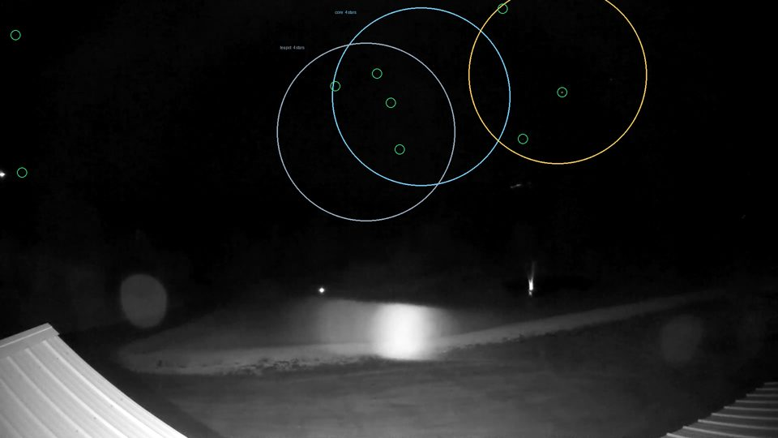
core 4 stars · flux 1,536 · peak 26× · alt 15.8°
rho 3 stars · flux 4,010 · peak 161×
teapot 4 stars · flux 1,550
30 of 60 frames stacked · noise σ 0.85 · 9 sources in sky
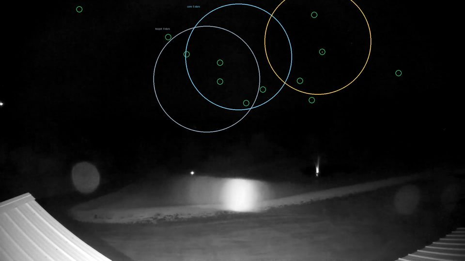
core 5 stars · flux 3,047 · peak 40× · alt 15.9°
rho 3 stars · flux 3,790 · peak 207×
teapot 4 stars · flux 3,084
30 of 60 frames stacked · noise σ 0.8 · 12 sources in sky
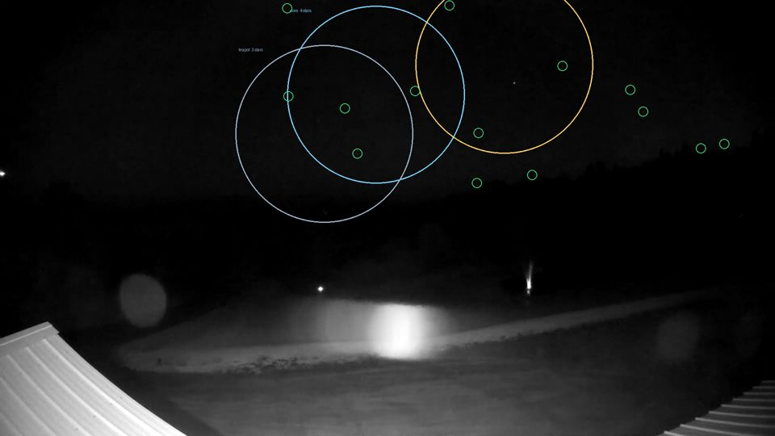
core 4 stars · flux 2,490 · peak 19× · alt 15.7°
rho 3 stars · flux 2,297 · peak 37×
teapot 3 stars · flux 1,896
30 of 60 frames stacked · noise σ 0.82 · 14 sources in sky
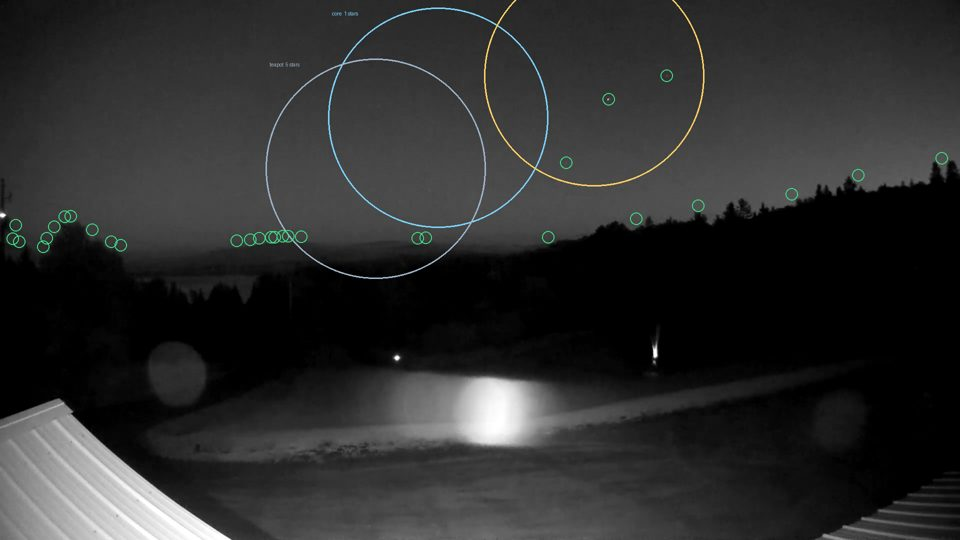
core 1 stars · flux 2,174 · peak 7× · alt 15.5°
rho 3 stars · flux 2,796 · peak 161×
teapot 5 stars · flux 6,544
30 of 60 frames stacked · noise σ 0.76 · 40 sources in sky
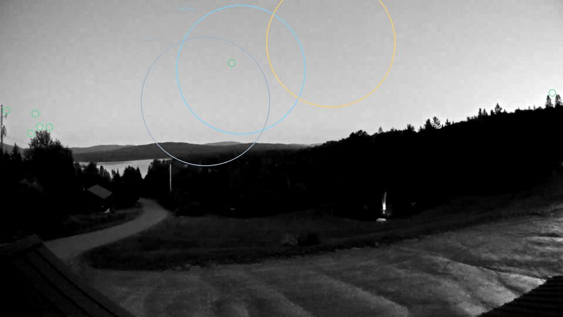
core 1 stars · flux 2,327 · peak 8× · alt 15.0°
rho 0 stars · flux 1,693 · peak 5×
teapot 1 stars · flux 33,395
30 of 60 frames stacked · noise σ 0.83 · 7 sources in sky
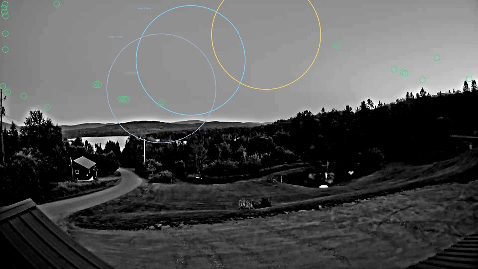
core 1 stars · flux 8,601 · peak 734× · alt 14.4°
rho 0 stars · flux 7,846 · peak 11×
teapot 4 stars · flux 28,612
30 of 60 frames stacked · noise σ 0.25 · 24 sources in sky
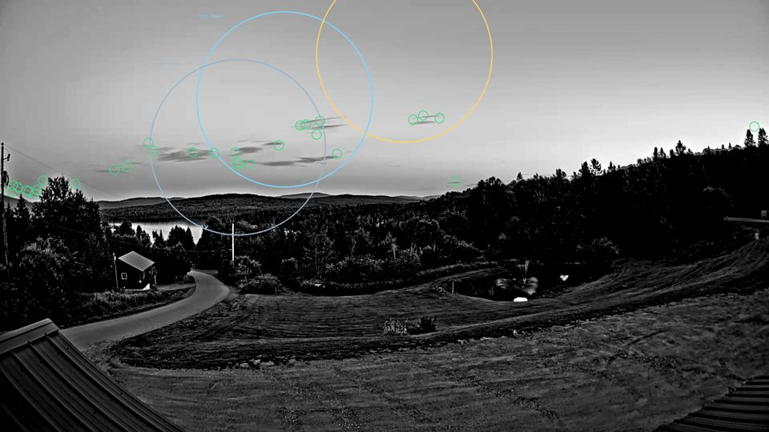
core 14 stars · flux 92,878 · peak 34× · alt 13.7°
rho 3 stars · flux 9,088 · peak 24×
teapot 14 stars · flux 138,846
30 of 60 frames stacked · noise σ 0.66 · 40 sources in sky

core 8 stars · flux 113,474 · peak 28× · alt 12.8°
rho 2 stars · flux 1,680 · peak 10×
teapot 9 stars · flux 130,972
30 of 60 frames stacked · noise σ 0.7 · 40 sources in sky

core 0 stars · flux 33 · peak 4× · alt 0.9°
rho 0 stars · flux 0 · peak 0×
teapot 0 stars · flux 175
30 of 60 frames stacked · noise σ 0.97 · 6 sources in sky

core 1 stars · flux 163 · peak 6× · alt 2.7°
rho 0 stars · flux 0 · peak 0×
teapot 0 stars · flux 613
30 of 60 frames stacked · noise σ 0.93 · 6 sources in sky

core 0 stars · flux 1,227 · peak 6× · alt 4.5°
rho 0 stars · flux 0 · peak 0×
teapot 0 stars · flux 1,521
30 of 60 frames stacked · noise σ 1.0 · 6 sources in sky

core 0 stars · flux 1,589 · peak 7× · alt 6.1°
rho 0 stars · flux 0 · peak 0×
teapot 0 stars · flux 1,856
30 of 60 frames stacked · noise σ 0.98 · 2 sources in sky

core 1 stars · flux 2,129 · peak 12× · alt 7.7°
rho 0 stars · flux 0 · peak 0×
teapot 1 stars · flux 2,788
30 of 60 frames stacked · noise σ 0.94 · 4 sources in sky

core 1 stars · flux 2,292 · peak 7× · alt 9.1°
rho 0 stars · flux 0 · peak 0×
teapot 3 stars · flux 2,767
30 of 60 frames stacked · noise σ 0.94 · 11 sources in sky

core 0 stars · flux 402 · peak 5× · alt 10.4°
rho 0 stars · flux 299 · peak 4×
teapot 0 stars · flux 371
30 of 60 frames stacked · noise σ 0.89 · 2 sources in sky

core 0 stars · flux 370 · peak 6× · alt 11.6°
rho 0 stars · flux 1,282 · peak 6×
teapot 2 stars · flux 610
30 of 60 frames stacked · noise σ 0.87 · 4 sources in sky

core 0 stars · flux 674 · peak 7× · alt 12.6°
rho 0 stars · flux 932 · peak 6×
teapot 2 stars · flux 492
30 of 60 frames stacked · noise σ 1.02 · 2 sources in sky

core 2 stars · flux 2,178 · peak 15× · alt 13.5°
rho 1 stars · flux 4,664 · peak 112×
teapot 3 stars · flux 1,019
30 of 60 frames stacked · noise σ 1.0 · 4 sources in sky

core 2 stars · flux 1,198 · peak 11× · alt 14.3°
rho 1 stars · flux 3,204 · peak 114×
teapot 3 stars · flux 959
30 of 60 frames stacked · noise σ 0.98 · 4 sources in sky

core 2 stars · flux 1,630 · peak 13× · alt 14.7°
rho 1 stars · flux 3,680 · peak 117×
teapot 3 stars · flux 814
30 of 60 frames stacked · noise σ 1.0 · 4 sources in sky

core 3 stars · flux 1,987 · peak 14× · alt 14.9°
rho 1 stars · flux 3,825 · peak 123×
teapot 1 stars · flux 1,058
30 of 60 frames stacked · noise σ 1.05 · 5 sources in sky

core 2 stars · flux 1,631 · peak 13× · alt 15.4°
rho 2 stars · flux 4,370 · peak 111×
teapot 1 stars · flux 1,385
30 of 60 frames stacked · noise σ 0.97 · 7 sources in sky

core 3 stars · flux 1,673 · peak 9× · alt 15.7°
rho 2 stars · flux 3,243 · peak 113×
teapot 2 stars · flux 1,793
30 of 60 frames stacked · noise σ 1.04 · 5 sources in sky
Every reading
| time | core ★ | core flux | rho ★ | rho flux | core alt | σ | sky |
|---|---|---|---|---|---|---|---|
| 21:00 | 3 | 20,868 | 9 | 19,000 | 15.6° | 1.81 | 83.2 |
| 20:45 | 5 | 70,396 | 2 | 20,227 | 15.2° | 1.88 | 165.0 |
| 20:30 | 2 | 36,768 | 2 | 31,024 | 14.6° | 1.08 | 188.9 |
| 20:15 | 2 | 49,604 | 2 | 56,336 | 13.9° | 1.02 | 182.5 |
| 20:00 | 1 | 93,613 | 0 | 57,838 | 13.1° | 1.2 | 186.4 |
| 01:15 | 0 | 25 | 0 | 0 | 0.4° | 0.94 | 21.9 |
| 01:00 | 0 | 62 | 0 | 0 | 2.3° | 0.96 | 22.0 |
| 00:45 | 0 | 266 | 0 | 0 | 4.0° | 0.98 | 21.3 |
| 00:30 | 1 | 612 | 0 | 0 | 5.7° | 0.9 | 21.7 |
| 00:15 | 0 | 499 | 0 | 0 | 7.3° | 0.85 | 22.1 |
| 00:00 | 1 | 835 | 0 | 0 | 8.7° | 0.86 | 21.3 |
| 23:45 | 1 | 380 | 0 | 0 | 10.1° | 0.87 | 21.5 |
| 23:30 | 2 | 1,247 | 0 | 83 | 11.3° | 0.86 | 21.3 |
| 23:15 | 1 | 1,708 | 0 | 162 | 12.4° | 0.9 | 19.3 |
| 23:00 | 0 | 1,082 | 0 | 430 | 13.3° | 0.92 | 19.1 |
| 22:45 | 2 | 1,734 | 1 | 3,364 | 14.1° | 0.92 | 18.7 |
| 22:30 | 3 | 1,668 | 1 | 2,280 | 14.8° | 0.88 | 19.1 |
| 22:15 | 3 | 1,774 | 2 | 3,648 | 15.3° | 0.86 | 19.1 |
| 22:00 | 5 | 1,785 | 2 | 2,764 | 15.6° | 0.83 | 19.6 |
| 21:45 | 4 | 1,536 | 3 | 4,010 | 15.8° | 0.85 | 18.4 |
| 21:30 | 5 | 3,047 | 3 | 3,790 | 15.9° | 0.8 | 22.9 |
| 21:15 | 4 | 2,490 | 3 | 2,297 | 15.7° | 0.82 | 29.9 |
| 21:00 | 1 | 2,174 | 3 | 2,796 | 15.5° | 0.76 | 83.0 |
| 20:45 | 1 | 2,327 | 0 | 1,693 | 15.0° | 0.83 | 163.2 |
| 20:30 | 1 | 8,601 | 0 | 7,846 | 14.4° | 0.25 | 164.6 |
| 20:15 | 14 | 92,878 | 3 | 9,088 | 13.7° | 0.66 | 194.6 |
| 20:00 | 8 | 113,474 | 2 | 1,680 | 12.8° | 0.7 | 205.0 |
| 01:15 | 0 | 33 | 0 | 0 | 0.9° | 0.97 | 27.6 |
| 01:00 | 1 | 163 | 0 | 0 | 2.7° | 0.93 | 27.1 |
| 00:45 | 0 | 1,227 | 0 | 0 | 4.5° | 1.0 | 26.0 |
| 00:30 | 0 | 1,589 | 0 | 0 | 6.1° | 0.98 | 25.8 |
| 00:15 | 1 | 2,129 | 0 | 0 | 7.7° | 0.94 | 25.0 |
| 00:00 | 1 | 2,292 | 0 | 0 | 9.1° | 0.94 | 24.6 |
| 23:45 | 0 | 402 | 0 | 299 | 10.4° | 0.89 | 20.1 |
| 23:30 | 0 | 370 | 0 | 1,282 | 11.6° | 0.87 | 19.7 |
| 23:15 | 0 | 674 | 0 | 932 | 12.6° | 1.02 | 19.3 |
| 23:00 | 2 | 2,178 | 1 | 4,664 | 13.5° | 1.0 | 18.4 |
| 22:45 | 2 | 1,198 | 1 | 3,204 | 14.3° | 0.98 | 18.4 |
| 22:34 | 2 | 1,630 | 1 | 3,680 | 14.7° | 1.0 | 18.3 |
| 22:30 | 3 | 1,987 | 1 | 3,825 | 14.9° | 1.05 | 18.5 |
| 22:15 | 2 | 1,631 | 2 | 4,370 | 15.4° | 0.97 | 18.4 |
| 22:01 | 3 | 1,673 | 2 | 3,243 | 15.7° | 1.04 | 18.7 |
Captured every 15 minutes through the dark hours. Calibrated on the night of 4 Aug 2026 — the only fully dark night before the trip.